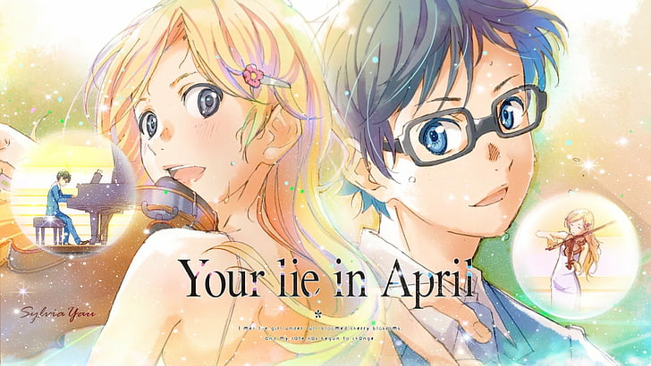

Kōsei Arima es un niño que tiene talento para tocar el piano y siempre domina en varios concursos, lo que hace que sea famoso entre los músicos jóvenes. Después de la muerte de su madre, quién también era su instructora, cayó en un colapso mental en medio de una interpretación de piano a la edad de 11 años. El trauma que sufrió le hizo perder la capacidad de escuchar el sonido del piano, aunque su audición estaba bien físicamente. Dos años después, Kōsei sigue sin haber tocado su piano y piensa que el mundo es monótono y sin color. También pareció dejar de lado su vida y solo interactuó de cerca con sus dos amigos, Tsubaki Sawabe y Ryota Watari. Hasta que un día, conoció a alguien que le cambió la vida y le devolvió el color a su vida, Kaori Miyazono, una joven violinista audaz y de espíritu libre de catorce años, cuyo estilo de interpretación refleja su personalidad, la cual ayuda a Kōsei a regresar al mundo de la música y le muestra que debe ser libre y romper moldes a diferencia del estilo estructurado y rígido al que Kosei estaba acostumbrado. Poco a poco, Kaori lleva a Kōsei de regreso al mundo de la música y le muestra que tocar música es algo que debe infundirse usando sentimientos e imaginación.